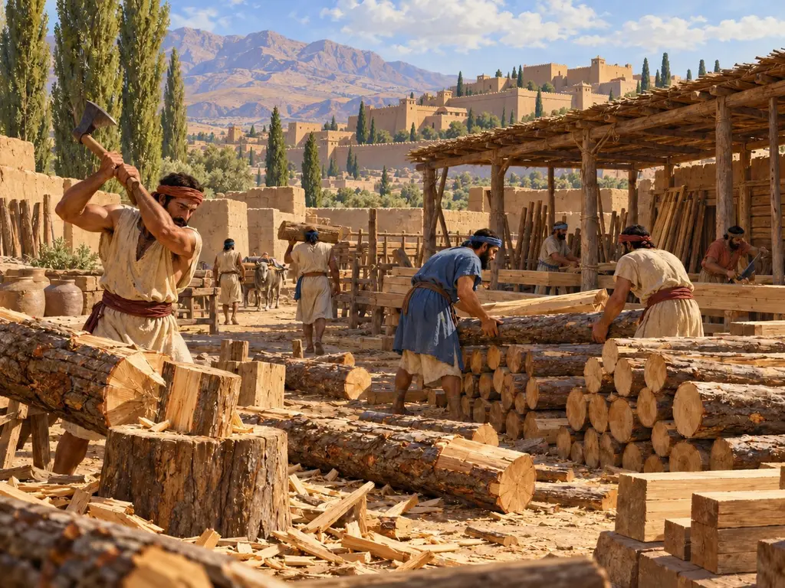
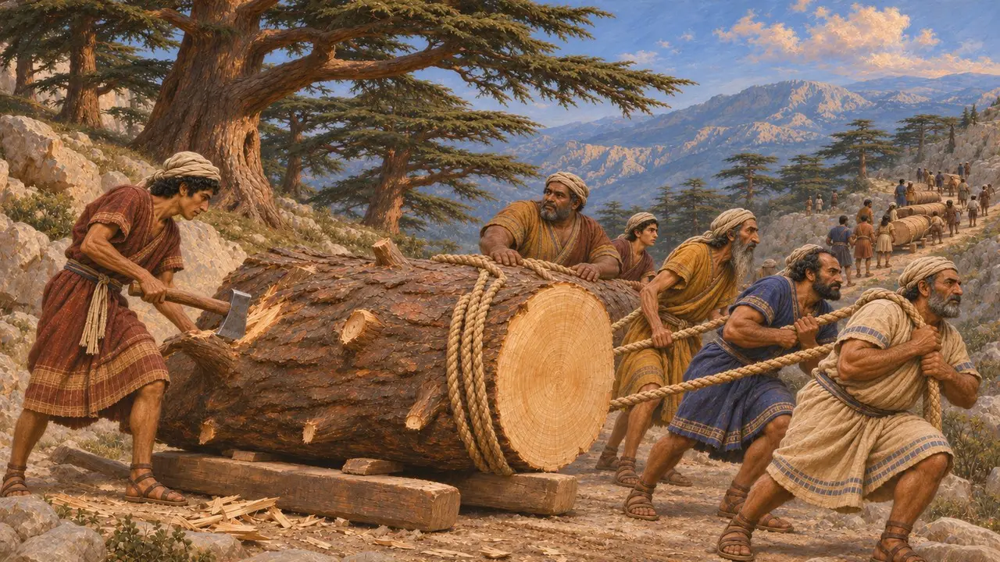
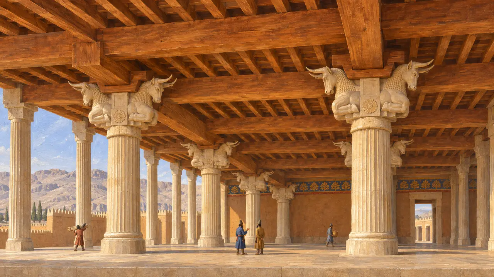
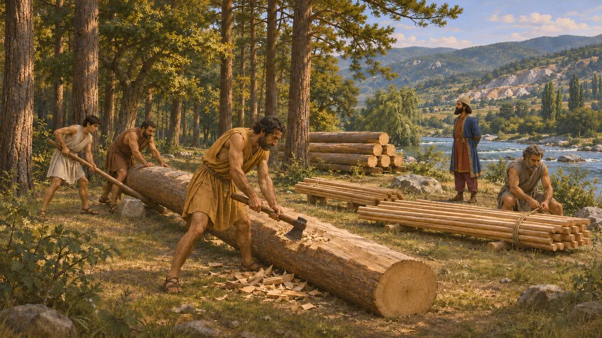
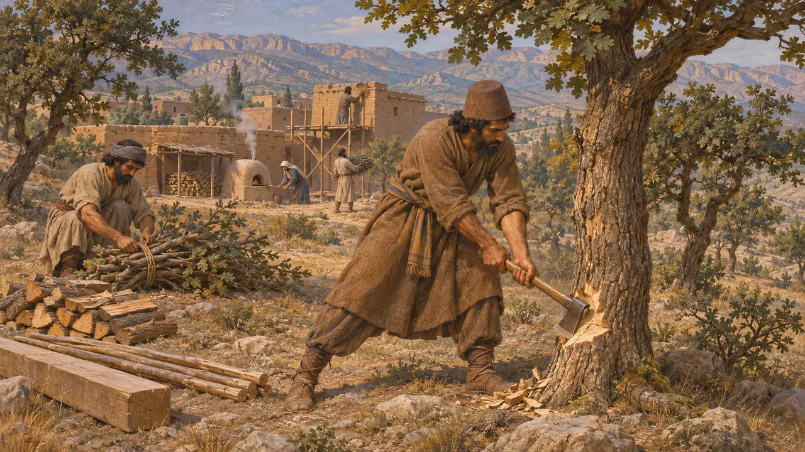

木こり小屋
アケメネス朝における木材の伐採と供給(紀元前530年頃~479年)
木材はペルシアの王たちの広間の屋根を葺き、煉瓦窯の燃料となり、艦隊の船を造り、庶民の家々を暖めた。日常の木材は身近な場所で伐られたが、王の建築に用いる巨大な梁は帝国の遠方から運ばれることも多く、ダレイオスは建築碑文でそのことを誇っている。
ゲームでは： 木こり小屋は森林の近くで木を伐り、木材を供給する。これは簡略化である。地元での伐採がもたらしたのは燃料や質の劣る材木であり、王の宮殿には遠方の諸州から長い杉材などの梁が運ばれた。

スーサのためのレバノン杉
同時代の記録ダレイオスはスーサの宮殿の勅許状に、建築資材がどこから来たのかを列挙した。杉材はレバノンという山で伐られ、アッシリア人がバビロンまで運び、そこからカリア人とイオニア人がスーサへと運んだ。ヤカと呼ばれる別の木材は、ガンダーラとカルマニアからもたらされた。王はこの長い輸送を、自らの支配がいかに遠くまで及ぶかの証として示したのである。
DSf

王の広間の屋根梁
同時代の記録ペルセポリスの列柱の間は広い空間を覆い、その平屋根は柱頭の上に載せた重い木の梁に支えられていた。紀元前330年にアレクサンドロスの軍勢がペルセポリスを焼いたとき、こうした木部の多くが焼け落ち、炭と化した。発掘者たちは破壊層から焼けた木材と厚い灰を見つけている。これらの遺物は、基壇の建物がいかに多くの木材を用いていたかを物語っている。
E. F. Schmidt, Persepolis I, 1953

北エーゲ海の造船用木材
古代の記述ヘロドトスによれば、ダレイオスはミレトスのヒスティアイオスにストリュモン河畔のミュルキノスの地を与えたが、のちに将軍メガバゾスが王にその危険を説いた。メガバゾスの言うには、その地には船や櫂に適した木材が豊富にあり、銀山もあるという。この逸話は、造船に適した森林が支配すべき戦略資源とみなされていたことを示している。
Herodotus 5.11; 5.23

地元の木材と日々の燃料
係争中伐採の大半は日々の必要を満たすためだった。炉やかまど、窯の燃料、足場の丸太、家の梁である。この時代のペルシスとザグロス山脈がどれほど森に覆われていたのか、伐採によってオークやネズ、その他の木々がどれほどの速さで減っていったのかは、今も歴史家の議論の的となっている。文献史料は一般の木こりについてほとんど語らないため、その実像の多くは後代の証拠や環境研究に頼っている。
R. Meiggs, Trees and Timber in the Ancient Mediterranean World, 1982
出典
- DSf
- Herodotus 5.11; 5.23
- E. F. Schmidt, Persepolis I, 1953
- R. Meiggs, Trees and Timber in the Ancient Mediterranean World, 1982
- P. Briant, From Cyrus to Alexander, 2002